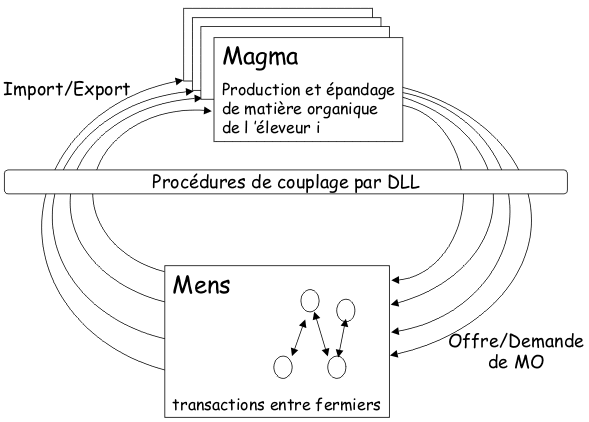

|
MagmaS
Couplage d'un système dynamique hybride et d'un
système multi-agent pour modéliser la gestion des
effluents d'élevage à La Réunion
Manuel Martin, Eric Piquet, Christophe Le Page,
François Guerrin (Cirad)
MagmaS est une plateforme de
simulation qui vise à aider à la gestion collective des
effluents d'élevage pour minimiser les impacts
environnementaux des activités de production animale.
Cette plateforme comprends deux modèles:

- Un système dynamique hybride appelé Magma
(Guerrin 2000a,b) modélise la dynamique interne de
systèmes d'élevages porcins (production d'effluents et
épandage au niveau de l'exploitation agricole)
- Techniquement, le couplage est réalisé en utilisant
le protocole Windows DLL
- Un modèle multi-agent appelé Mens
sert à représenter les négociations entre agriculteurs
(qui sont des instances du modèle Magma) qui cherchent
à échanger de la matière organique (MO). Ceux qui sont
plutôt cultivateurs ont en effet des besoins de
fertilisants.
L'utilisation de Magma se justifie par le fait qu'un
système dynamique hybride est bien adapté pour
représenter le fonctionnement d'une exploitation
agricole. De la même manière, l'utilisation de Mens se
justifie par le fait que les systèmes multi-agent sont
particulièrement bien adaptés pour représenter des
entités en interaction.
Mens se situe au niveau collectif, puisqu'il se
concentre sur la représentation des échanges
d'information et de MO entre exploitations. A l'opposé,
Magma se situe au niveau individuel, puisqu'il intègre
tous les aspects relatifs à la gestion de la MO au
niveau d'une exploitation: production par des systèmes
d'élevage éventuellement variés, épandage sur les
cultures, transformations de la MO (par exemple
compostage), pollutions éventuelles lorsque les unités
de stockage des effluents débordent, ou lors de
sur-épandages.
Le couplage de Magma (implementé sous le logiciel
Vensim) et Mens (implementé sous Cormas) est réalisé au
niveau de MagmaS en utilisant une fonctionnalité de
simulation de Vensim appelé "gaming": pour chaque
journée, Magma simule la dynamique interne des stocks de
MO de chacune des exploitations, qui résulte dans des
surplus ou des déficits (besoins des cultures en MO).
Tous les 7 pas de temps de simulation (chaque semaine),
Mens intervient alors pour simuler des transactions de
MO entre exploitations. Ces transactions dépendent bien
sûr des surplus et des déficits de chaque exploitations
que Magma transmet à Mens. A l'issue de ces
transactions, le flux de données repart dans le sens
opposé: les bilans en terme de MO sont ré-injectés dans
le modèle Magma.
Pour plus d'information, contacter
l'auteur.
References
Guerrin, F. (2000a). Simulation of actions to help
animal wastes management atthe farm level. In:
MCPL'2000, IFAC / IFIP / IEEE 2nd Conf. on Management
and Control of Production and Logistics. Grenoble (F),
5-8 July 2000, CD Rom : Session R6, P135.
Guerrin,F. (2000b). Magma : a model to help animal
manure management at the farm level. In:
Agricontrol'2000, Int. Conf. On Modelling and Control in
Agriculture, Horticulture and Post-Harvest Processing.
Wageningen (NL), 10-12 July 2000, p.159-164.
Piquet, E. et Le Page C. (2001). Couplage des logiciels
VisualWorks etVensim sous Windows : DDE ou DLL ? Rapport
Cirad TERA n° 18/01, June 2001, 14 pages.
|
|